电脑操作基础
作者：TeliuTe 来源：基础教程网
八、学习画图 返回目录 下一课Ubuntu的图像菜单里，有一个GIMP图片编辑，操作有些复杂，简单的画图程序是gpaint，下面我们来看一个练习；
1、安装gpaint
1）点菜单“系统－新立得软件包管理器”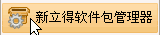，输入密码后进入新立得窗口；
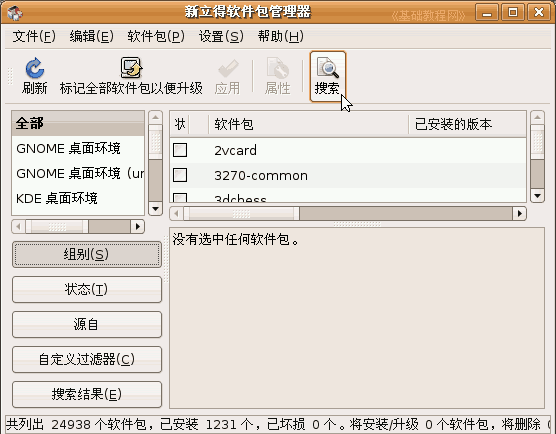
2）点工具栏的“搜索”按钮，在出来的文本框里输入gpaint，然后点“搜索”，出来的窗口中间gpaint，
点右键选“标记以便安装”，然后点工具栏的绿色打勾按钮，安装好gpaint；
3）安装好以后，在菜单“应用程序－图像－GNU Paint”可以打开它，出来一个画图窗口；
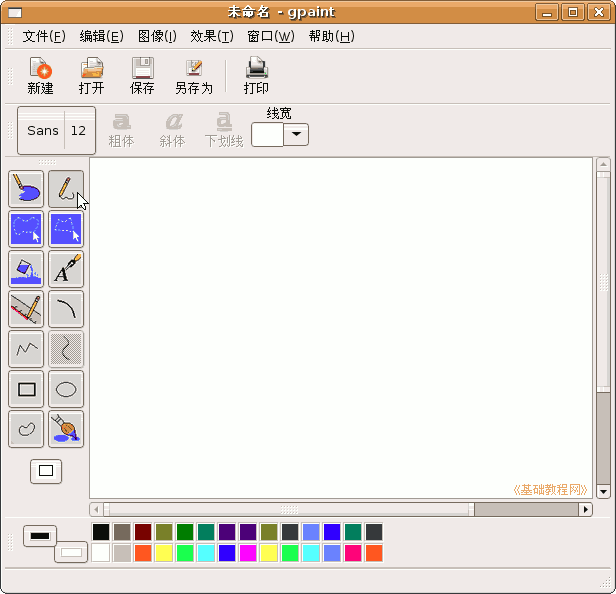4）在窗口左边是工具箱，里面放了许多画图的工具，像橡皮、铅笔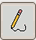、直线等；
5）下边是颜料盒，里面有各种颜色，点一下就可以选中这种颜色，默认的是黑色和白色；
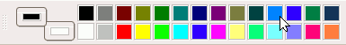
左键点一下是选前景色，也就是铅笔的颜色，右键点一下是背景色，也就是纸的颜色；
2、画图操作
1）在工具箱里头选择油漆桶工具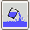，在颜料盒中分别点右键和左键选择蓝色，
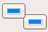
然后在中间白纸上点一下左键，把纸喷成蓝色，我们要画一个小鸭；
2）再选择椭圆工具，在颜料盒中点左键选择黑色，在纸上画两个椭圆，作为小鸭的头和身子；
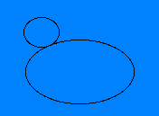
3）再选择油漆桶工具，在颜料盒中点左键选择黄色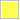，在两个圆中间点一下，都喷上黄色；
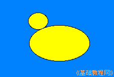
4）再选择椭圆工具和黑色，在小鸭头里面画一个小圆圈当眼睛，用油漆桶喷上黑色；
5）选择铅笔工具，小心地画上嘴巴，再选黄色和油漆桶，给嘴巴也喷上黄色，
注意画嘴巴的时候，嘴巴要闭上封口，如果漏了的话，喷颜色的时候会漏出去；
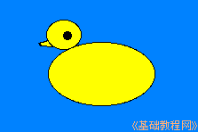
6）选择铅笔工具和黑色，给小鸭画上翅膀，画上水波就完成了，如果有错误，就用橡皮工具擦一下；
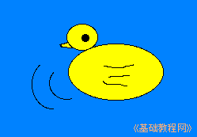
7）点菜单“文件－保存”命令，以“小鸭”为文件名，保存文件到自己的文件夹中，
默认保存的是png格式，如果想要存成其他格式，可以在文件名后面加上扩展名；
本节学习了画图的基本操作，如果你成功地完成了练习，请继续学习下一课内容；本教程由86团学校TeliuTe制作|著作权所有
基础教程网：http://teliute.org/
美丽的校园……
转载和引用本站内容，请保留版权信息和本站链接。